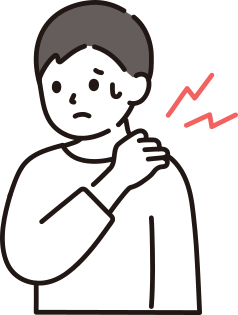

肩が上がりにくい場面や痛みの出方を整理します
服を着る、髪を結ぶ、夜に痛むなど、日常で困っている場面を確認しながら進めます。
「服が着替えられない」「夜中に痛みで目が覚める」——
五十肩は時期を見極めた対応で、回復を大きく早められます。
肩が痛くて腕を上げられない
髪を結ぶ、背中に手を回す動作ができない
夜中にズキズキ痛んで、痛い方を下にして寝られない
肩が固まって、可動域がどんどん狭くなっている
「時間が経てば治る」と言われたが、なかなか良くならない

服を着る、髪を結ぶ、夜に痛むなど、日常で困っている場面を確認しながら進めます。

動かしにくさや痛みの出方を確認し、今の時期に合った無理のない進め方をご提案します。

長引く肩の痛みで不安が強い方にも、現状を整理しながら落ち着いてご相談いただける環境を整えています。
五十肩の本当の原因は「上腕骨頭の前方へのズレ」です。スマホやPCの使い過ぎで猫背になると、大胸筋・小胸筋などの前側の筋肉（ガンバリ筋）が過緊張し、骨頭を前方へ引き出してしまいます。
この状態で腕を動かすと、骨頭が肩峰の下の組織を挟み込む「肩峰下インピンジメント」が発生し、強い炎症と夜間痛を引き起こします。
五十肩が悪化するメカニズム
大胸筋・小胸筋がガンバリ筋化（猫背・巻き肩）
上腕骨頭が前方へズレる
肩甲骨の動きがサボり筋化して低下
肩関節だけで無理に動かし炎症悪化
炎症→拘縮→可動域の低下が進行
時期を誤ると悪循環になります
✦ ポイント
五十肩には「炎症期・拘縮期・回復期」の3つの時期があり、時期によって最適な対処がまったく異なります。時期の見極めが施術で最も重要なポイントです。
今の時期を正確に見極め、段階に合わせた手技と運動を組み合わせて根本改善を目指します

炎症期は肩への直接刺激を避け、鎖骨・肘・胸椎など周辺からアプローチ。拘縮期に入ったら前方・後方の癒着した組織をほぐし、肩甲骨の可動性を取り戻します。
前鋸筋・菱形筋など、サボってしまった肩甲骨周囲の筋肉を再稼働させ、肩関節を正しい位置でキープできる安定性を作ります。
肩甲上腕・肩鎖・胸鎖・第2肩関節・肩甲胸郭の5つの関節が連動して動くよう調整し、着替えや洗髪などの日常動作を安全に取り戻せるよう練習します。
最初の1〜2ヶ月は週1〜2回のペースをおすすめしています。時期の進行に合わせて頻度を調整し、状態が安定してきたら間隔を広げていきます。
時期によります。炎症が強い急性期は安静が基本ですが、拘縮期に入ったら「痛くない範囲で少しずつ動かす」ことが大切です。どこまで動かしてよいかを具体的にお伝えします。
治ることもありますが1〜2年かかることが多く、可動域が完全に戻らないケースもあります。時期に合った対処で回復期間を大きく短縮できます。
医学的には同じ「肩関節周囲炎」です。発症する年代によって呼び名が変わるだけで、症状や対処法は基本的に同じです。
RELATED SYMPTOMS
肩や首周りの筋肉のアンバランスは、様々な不調を引き起こします。
気になる症状があれば、あわせてご相談ください。
「自分の症状は良くなるのだろうか」「どんな施術をされるのか不安」——
そう思っている方こそ、まずはお気軽にご相談ください。
初回のカウンセリングで、あなたの状態を丁寧に確認したうえで、施術方針をご提案します。
柏市をはじめ、松戸市・我孫子市・取手市・野田市・流山市・守谷市など近隣エリアからもご来院いただいています。